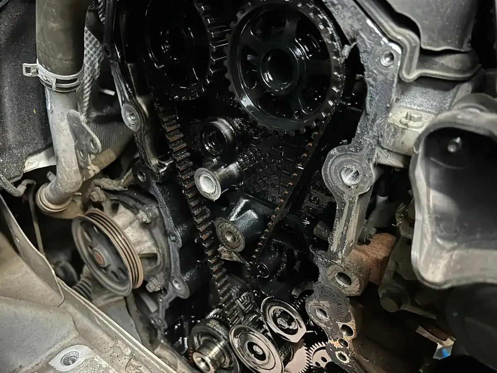

Le moteur tourne mal? Le turbo siffle? La boîte de vitesses craque? C'est exactement ce qu'on fait chez DMT AUTOGROUP à Zaventem. Moteurs, turbos, embrayages, boîtes de vitesses — on ouvre, on diagnostique, on répare. Toutes marques. Draait de motor slecht? Fluit de turbo? Kraakt de versnellingsbak? Dat is precies wat we doen bij DMT AUTOGROUP in Zaventem. Motoren, turbo's, koppelingen, versnellingsbakken — we openen, diagnosticeren en herstellen. Alle merken.
Le turbo, c'est le coeur de la puissance de votre moteur diesel ou essence turbo. Quand il lâche, votre voiture perd toute sa force et peut même partir en mode dégradé. Fumée bleue ou noire à l'échappement, sifflement anormal, perte de puissance en accélération, consommation d'huile en hausse — si vous remarquez un de ces symptômes, passez vite chez nous. De turbo is het hart van het vermogen van uw diesel- of turbobenzinemotor. Wanneer deze het begeeft, verliest uw auto al zijn kracht en kan hij zelfs in noodmodus schakelen. Blauwe of zwarte rook uit de uitlaat, abnormaal gefluit, vermogensverlies bij het optrekken, stijgend olieverbruik — merkt u een van deze symptomen op, kom dan snel langs.
On a vu des devis de concessions à 4000-5000 euros pour un remplacement turbo. Chez nous, c'est 1500-2500 selon le modèle — avec une pièce de même qualité. Un turbo qui tourne encore peut parfois être reconditionné : on remplace les paliers, le compresseur interne et les joints. C'est moins cher qu'un turbo neuf et ça dure longtemps. We hebben offertes gezien van concessies voor 4000-5000 euro voor een turbo-vervanging. Bij ons is dat 1500-2500 naargelang het model — met een stuk van dezelfde kwaliteit. Een turbo die nog draait kan soms gereviseerd worden: we vervangen de lagers, de interne compressor en de afdichtingen. Dat is goedkoper dan een nieuwe turbo en gaat lang mee.
On vérifie aussi tout le circuit d'alimentation en huile du turbo. Un turbo qui manque d'huile, c'est un turbo qui casse à nouveau. On gère aussi les compresseurs de climatisation — si votre clim ne refroidit plus, c'est souvent le compresseur qui est en cause. We controleren ook het volledige olietoevoercircuit van de turbo. Een turbo met te weinig olie is een turbo die opnieuw kapotgaat. We behandelen ook airco-compressors — als uw airco niet meer koelt, is het vaak de compressor die de oorzaak is.

L'embrayage qui patine, la boîte qui craque, les vitesses qui passent mal — on voit ça tous les jours. Comment savoir si votre embrayage est usé? La pédale devient molle, le moteur monte dans les tours sans que la voiture accélère, ou vous sentez une odeur de brûlé en montant une côte. Een slippende koppeling, krakende versnellingsbak, moeilijk schakelen — we zien het elke dag. Hoe weet u of uw koppeling versleten is? Het pedaal wordt slap, de motor draait hoog zonder dat de auto optrekt, of u ruikt een brandlucht bij het optrekken op een helling.
Un embrayage à 3000 euros chez le concessionnaire? On fait le même travail entre 1200 et 1800 euros. En général, un embrayage tient entre 100 000 et 150 000 km — mais ça dépend du style de conduite. En ville, ça use plus vite. Een koppeling van 3000 euro bij de concessie? Wij doen hetzelfde werk voor 1200 tot 1800 euro. Gemiddeld gaat een koppeling 100 000 tot 150 000 km mee — maar dat hangt af van de rijstijl. In de stad slijt het sneller.
Chez DMT AUTOGROUP, on démonte la boîte de vitesses, on inspecte tout : disque d'embrayage, butée, volant moteur, synchros. On vous explique ce qu'il faut changer et on le fait proprement. Manuelle ou automatique, on gère. Bij DMT AUTOGROUP demonteren we de versnellingsbak en inspecteren alles: koppelingsschijf, druklager, vliegwiel, synchromesh. We leggen uit wat er vervangen moet worden en doen het vakkundig. Manueel of automatisch, we behandelen beide.
Pour les boîtes DSG (Volkswagen, Audi, Skoda, Seat), on a une page dédiée à la réparation et vidange de boîte DSG. C'est un sujet à part entière. Voor DSG-versnellingsbakken (Volkswagen, Audi, Skoda, Seat) hebben we een aparte pagina over herstelling en olieverversing van DSG-bakken. Dat is een apart onderwerp.


Votre moteur consomme trop? Il manque de puissance? Le ralenti est instable? Un bon réglage moteur peut tout changer. Avec nos outils de diagnostic informatique, on analyse les paramètres moteur et on ajuste ce qu'il faut : injection, allumage, distribution. Verbruikt uw motor te veel? Mist hij vermogen? Is het stationair onstabiel? Een goede motorafstelling kan alles veranderen. Met onze computerdiagnose tools analyseren we de motorparameters en stellen we bij wat nodig is: injectie, ontsteking, distributie.
Le calage de distribution, c'est le timing exact entre les soupapes et les pistons. Si ce timing est décalé, même légèrement, le moteur perd en puissance et consomme plus. On règle aussi le système d'injection — pression de rampe, débit des injecteurs, temps d'injection. De distributie-afstelling is de exacte timing tussen de kleppen en de zuigers. Als die timing verschoven is, zelfs lichtjes, dan verliest de motor vermogen en verbruikt hij meer. We stellen ook het injectiesysteem af — raildruk, injectorendebiet, inspuittijd.
Un moteur bien réglé, c'est un moteur qui tourne rond, qui pollue moins et qui consomme juste ce qu'il faut. C'est de la mécanique de précision et c'est notre spécialité depuis 15 ans. Een goed afgestelde motor is een motor die rond draait, minder vervuilt en precies genoeg verbruikt. Dit is precisiewerk en het is onze specialiteit sinds 15 jaar.
Du remplacement de joint de culasse à la réfection moteur complète, on fait de la mécanique lourde dans notre atelier à Zaventem. Chaîne de distribution, culasse, pistons, bielles — quand d'autres garages vous envoient chez le concessionnaire, nous on ouvre le moteur et on le répare. Van het vervangen van een cilinderkoppakking tot een volledige motoroverhaul, we doen zwaar mechanisch werk in ons atelier in Zaventem. Distributieketting, cilinderkop, zuigers, drijfstangen — wanneer andere garages u naar de dealer sturen, openen wij de motor en herstellen we hem.
Quand un autre garage vous dit "il faut changer le moteur", passez chez nous d'abord. Souvent, c'est un joint de culasse ou un capteur — pas un moteur complet. Un joint de culasse qui lâche, ça peut provoquer un mélange d'eau et d'huile. Si vous voyez de la mayonnaise sous le bouchon d'huile, c'est souvent ça. Wanneer een andere garage zegt "de motor moet vervangen worden", kom dan eerst bij ons langs. Vaak is het een koppakking of een sensor — geen volledige motor. Een koppakking die het begeeft kan een mengsel van water en olie veroorzaken. Ziet u mayonaise onder de oliedop? Dan is het vaak dat.
On fait aussi du travail de culasse : rectification du plan de joint, remplacement des soupapes, vérification des guides. C'est un savoir-faire qui se perd, et c'est pour ça qu'on l'a gardé. Après une grosse réparation moteur, pensez à faire une vidange complète pour repartir sur de bonnes bases. Et si le moteur a souffert suite à un accident, notre atelier de carrosserie et peinture remet l'extérieur en état pendant qu'on s'occupe de la mécanique. We doen ook cilinderkopwerk: vlakken van het koppakking-oppervlak, vervanging van kleppen, controle van de geleiders. Dit is vakmanschap dat verdwijnt, en daarom hebben wij het behouden. Na een grote motorherstelling is het belangrijk om een volledige olieverversing te doen om met een schone basis te herbeginnen. Is de motor beschadigd door een ongeval? Dan herstelt ons carrosserie- en lakwerk-atelier de buitenkant terwijl wij de mechaniek aanpakken.



Le voyant ABS qui reste allumé, c'est un problème de sécurité qu'il ne faut pas ignorer. Capteur de roue, module ABS, câblage — on diagnostique et on répare. Le problème vient souvent des capteurs de vitesse de roue, montés près des disques de frein, exposés à la boue, au sel et aux chocs. Een ABS-lampje dat blijft branden is een veiligheidsprobleem dat je niet mag negeren. Wielsensor, ABS-module, bedrading — we diagnosticeren en herstellen. Het probleem komt vaak van de wielsnelheidssensoren, die vlak bij de remschijven zitten, blootgesteld aan modder, zout en schokken.
Un capteur encrassé ou abîmé envoie un mauvais signal au module ABS. Résultat : le voyant s'allume et le système se désactive. Autres causes fréquentes : câble coupé, connecteur oxydé ou module ABS défaillant. On lit les codes d'erreur, on teste chaque capteur et on trouve la panne. Een vuile of beschadigde sensor stuurt een fout signaal naar de ABS-module. Resultaat: het lampje gaat branden en het systeem schakelt uit. Andere veelvoorkomende oorzaken: gebroken kabel, geoxideerde connector of defecte ABS-module. We lezen de foutcodes uit, testen elke sensor en vinden de storing.
On en profite souvent pour vérifier l'état de vos pneus aussi, car un capteur ABS défaillant peut masquer une usure irrégulière. En Belgique, un ABS défaillant peut aussi faire rater votre contrôle technique. Autant régler ça avant. We controleren dan ook meteen de staat van uw banden, want een defecte ABS-sensor kan ongelijkmatige slijtage verbergen. In België kan een defect ABS-systeem er ook voor zorgen dat u niet door de technische keuring komt. Beter om dat op tijd te regelen.
Ça peut être plein de choses — turbo défaillant, filtre bouché, injecteurs sales, problème de distribution, vanne EGR encrassée. Ça peut être le turbo, mais aussi un simple filtre encrassé. Impossible de deviner sans diagnostic. Passez chez nous, on branche la valise et on vous dit exactement ce qui ne va pas. Pas de devinettes, pas de pièces changées au hasard. Dat kan van alles zijn — defecte turbo, verstopt filter, vuile injectoren, distributieprobleem, vervuilde EGR-klep. Het kan de turbo zijn, maar ook gewoon een vervuild filter. Onmogelijk om te raden zonder diagnose. Kom langs, we sluiten de diagnosecomputer aan en vertellen precies wat er mis is. Geen giswerk, geen onderdelen vervangen op goed geluk.
Ça dépend du modèle. Un embrayage de Polo, ce n'est pas le même prix qu'un embrayage de BMW X5. Chez nous, comptez entre 1200 et 1800 euros tout compris — là où un concessionnaire facture facilement 3000. On vous fait un devis précis avant de démonter quoi que ce soit. Dat hangt af van het model. Een koppeling van een Polo is niet dezelfde prijs als die van een BMW X5. Bij ons rekent u op 1200 tot 1800 euro alles inbegrepen — waar een concessie makkelijk 3000 vraagt. We geven u een nauwkeurige offerte voordat we iets demonteren.
Possible, mais pas forcément. Un sifflement peut venir du turbo, mais aussi d'un tuyau d'admission fissuré, d'une courroie usée ou d'une fuite dans l'intercooler. On diagnostique la source exacte avant de vous facturer quoi que ce soit. Mogelijk, maar niet per se. Een gefluit kan van de turbo komen, maar ook van een gescheurde inlaatslang, een versleten riem of een lek in de intercooler. We diagnosticeren de exacte bron voordat we u iets factureren.
Pas toujours. On voit régulièrement des clients qui arrivent avec un devis de remplacement complet alors que le problème vient d'un joint, d'un capteur ou d'une pièce à 50 euros. On ouvre, on regarde, et on vous dit honnêtement ce qu'il faut vraiment changer. Niet altijd. We zien regelmatig klanten die binnenkomen met een offerte voor een volledige vervanging terwijl het probleem van een pakking, een sensor of een onderdeel van 50 euro komt. We openen, bekijken, en vertellen eerlijk wat er echt vervangen moet worden.
Oui — vidange de boîte auto, remplacement de mécatronique, réparation de convertisseur. On fait aussi la vidange de boîte automatique. On gère les boîtes manuelles et automatiques de toutes marques. C'est un travail spécialisé que beaucoup de garages refusent, mais pas nous. Ja — olieverversing automaat, vervanging mechatronica, herstelling koppelomvormer. We doen ook de olieverversing van de automatische versnellingsbak. We behandelen manuele en automatische versnellingsbakken van alle merken. Dit is gespecialiseerd werk dat veel garages weigeren, maar wij niet.
Lundi — Vendredi · 08:30 — 18:00
Mechelsesteenweg 270, 1933 ZaventemMaandag — Vrijdag · 08:30 — 18:00
Mechelsesteenweg 270, 1933 Zaventem